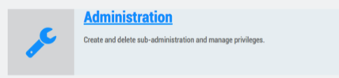
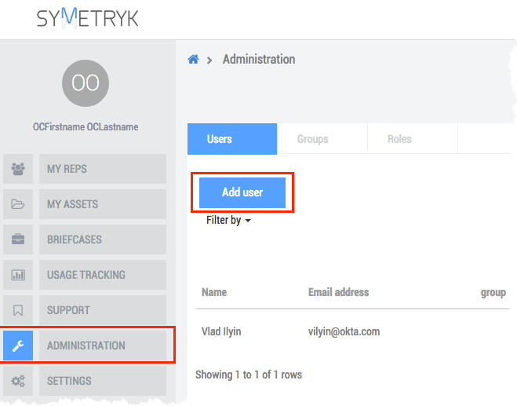
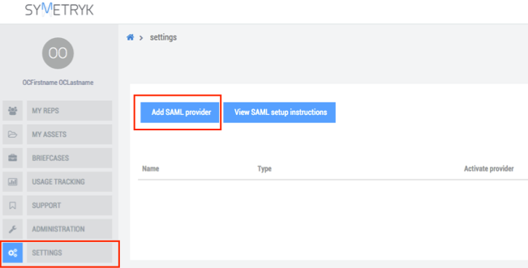
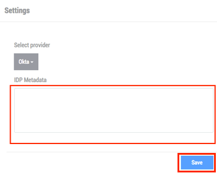
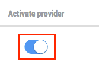

Click the Administration chicklet, as shown below.
Select Admistration from the menu on the left side of the screen. Then, select Add User in the screen that opens on the right, as shown below.
Select Settings from the menu on the left side of the screen. Then, select Add SAML provider, as shown below.
In the Settings window that opens, copy and paste the following IDP Metadata, as shown below. When done, click Save.
Sign into the Okta Admin dashboard to generate this value.

After adding the SAML provider, activate it by clicking the activation switch to move it to the right, as shown below.
Done!
Note: SP-initiated flows and IdP-initiated flows are supported. Just In Time (JIT) provisioning are not supported.